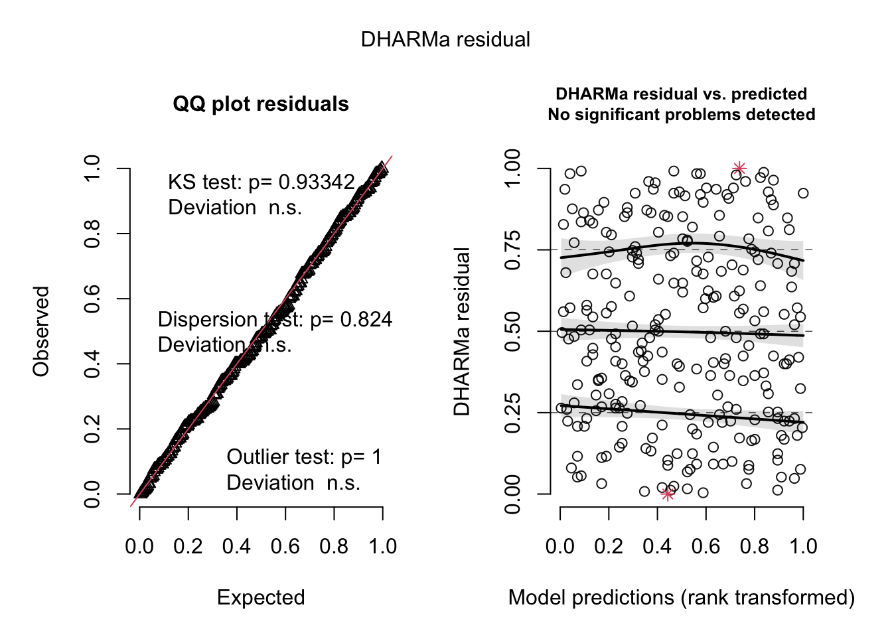
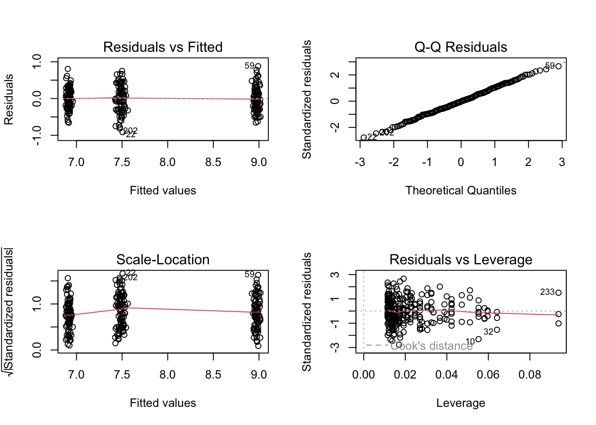

F-statistic: 338.4 on 62 and 1 DF, p-value: 0.0000
Code
flextable::as_flextable(soil_lm) %>%set_formatter(# special function to represent p < 0.001values =list("p.value"=function(x){ z <- scales::label_pvalue()(x) z[!is.finite(x)] <-"" z }) )
# A tibble: 3 2
fertilizer mean
<fct> <dbl>
1 low 2.25
2 medium 2.82
3 high 3.51
Code
plant_df %>%summarize(mean =mean(growth))
# A tibble: 1 1
mean
<dbl>
1 2.86
Code
plant_lm <-lm(growth ~ humidity + fertilizer,data = plant_df)# am i broken because i can't look at anything other than dharma residualssimulateResiduals(plant_lm) %>%plot()
# A tibble: 10 3
weight toxicity color
<dbl> <dbl> <fct>
1 3.18 8.29 blue
2 3.02 9.24 green
3 3.01 8.75 green
4 3.07 7.24 red
5 2.98 7.47 blue
6 2.94 8.89 green
7 2.95 7.26 blue
8 2.91 7.25 blue
9 2.95 6.61 red
10 3.06 8.96 green
model
Code
model1 <-lm(toxicity ~ weight + color, data = frog_df)model2 <-lm(toxicity ~ weight * color, data = frog_df)simulateResiduals(model1, plot =TRUE)

Object of Class DHARMa with simulated residuals based on 250 simulations with refit = FALSE . See ?DHARMa::simulateResiduals for help.
Scaled residual values: 0.804 0.556 0.336 0.376 0.5 0.56 0.076 0.74 0.308 0.008 0.416 0.828 0.684 0.204 0.272 0.66 0.172 0.208 0.604 0.708 ...
Code
simulateResiduals(model2, plot =TRUE)
Object of Class DHARMa with simulated residuals based on 250 simulations with refit = FALSE . See ?DHARMa::simulateResiduals for help.
Scaled residual values: 0.82 0.536 0.336 0.42 0.436 0.572 0.076 0.74 0.3 0.012 0.368 0.84 0.628 0.256 0.244 0.692 0.144 0.212 0.58 0.752 ...
Code
check_model(model2)
Code
testOutliers(model2)
DHARMa outlier test based on exact binomial test with approximate
expectations
data: model2
outliers at both margin(s) = 1, observations = 261, p-value = 0.7287
alternative hypothesis: true probability of success is not equal to 0.007968127
95 percent confidence interval:
9.699839e-05 2.116127e-02
sample estimates:
frequency of outliers (expected: 0.00796812749003984 )
0.003831418
diagnostics
Code
par(mfrow =c(2, 2))plot(model1)
Code
plot(model2)

model summary
Code
summary(model1)
Call:
lm(formula = toxicity ~ weight + color, data = frog_df)
Residuals:
Min 1Q Median 3Q Max
-0.90113 -0.21865 -0.00068 0.22588 0.90229
Coefficients:
Estimate Std. Error t value Pr(>|t|)
(Intercept) 7.71921 0.58381 13.222 <2e-16 ***
weight -0.07811 0.19467 -0.401 0.689
colorgreen 1.48908 0.05049 29.490 <2e-16 ***
colorred -0.56874 0.05049 -11.263 <2e-16 ***
---
Signif. codes: 0 '***' 0.001 '**' 0.01 '*' 0.05 '.' 0.1 ' ' 1
Residual standard error: 0.333 on 257 degrees of freedom
Multiple R-squared: 0.8733, Adjusted R-squared: 0.8718
F-statistic: 590.6 on 3 and 257 DF, p-value: < 2.2e-16
Code
summary(model2)
Call:
lm(formula = toxicity ~ weight * color, data = frog_df)
Residuals:
Min 1Q Median 3Q Max
-0.91522 -0.22141 -0.00686 0.21240 0.87930
Coefficients:
Estimate Std. Error t value Pr(>|t|)
(Intercept) 8.2941 1.0119 8.196 1.21e-14 ***
weight -0.2702 0.3379 -0.800 0.425
colorgreen 0.1204 1.4311 0.084 0.933
colorred -0.9248 1.4311 -0.646 0.519
weight:colorgreen 0.4573 0.4778 0.957 0.339
weight:colorred 0.1189 0.4778 0.249 0.804
---
Signif. codes: 0 '***' 0.001 '**' 0.01 '*' 0.05 '.' 0.1 ' ' 1
Residual standard error: 0.3337 on 255 degrees of freedom
Multiple R-squared: 0.8738, Adjusted R-squared: 0.8713
F-statistic: 353.1 on 5 and 255 DF, p-value: < 2.2e-16